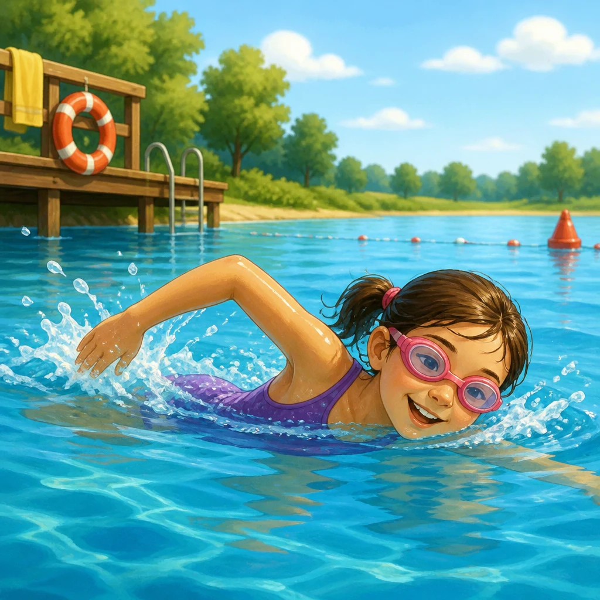
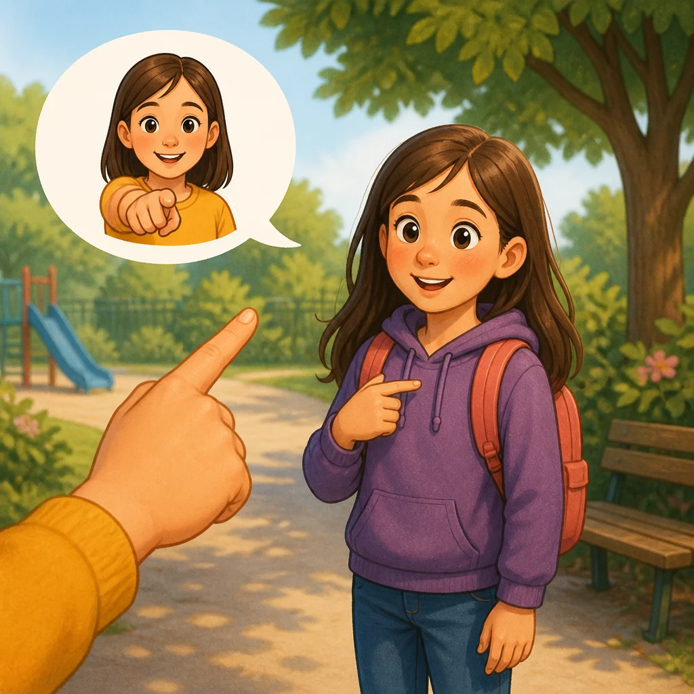
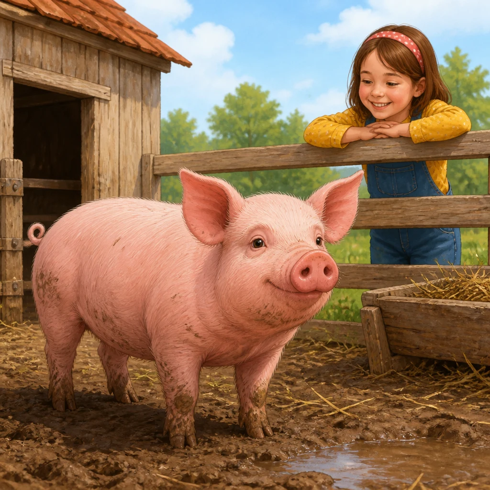
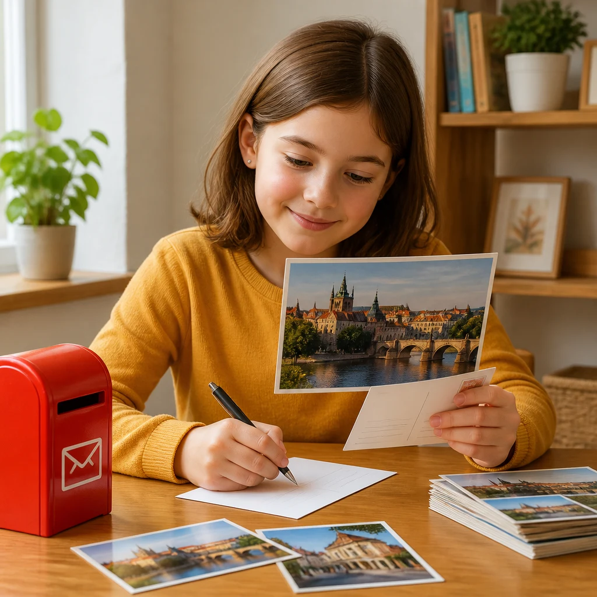
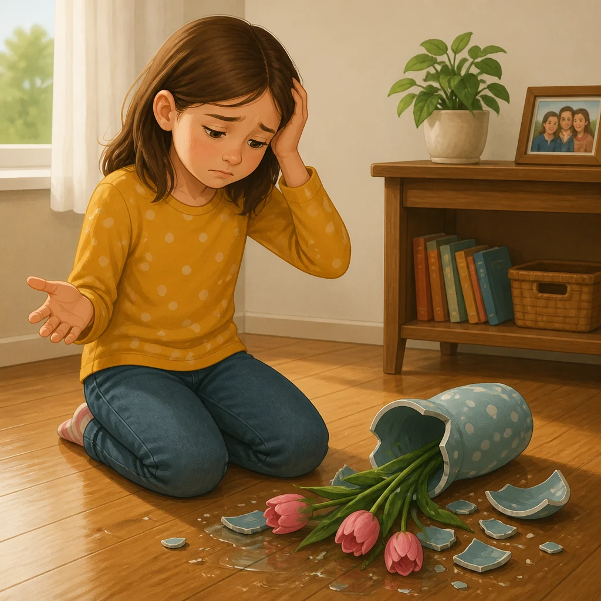
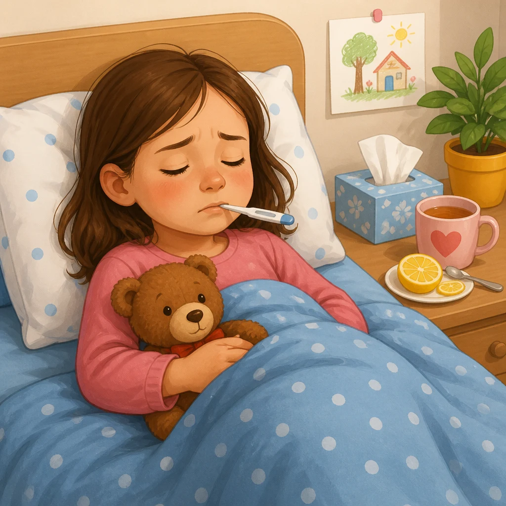
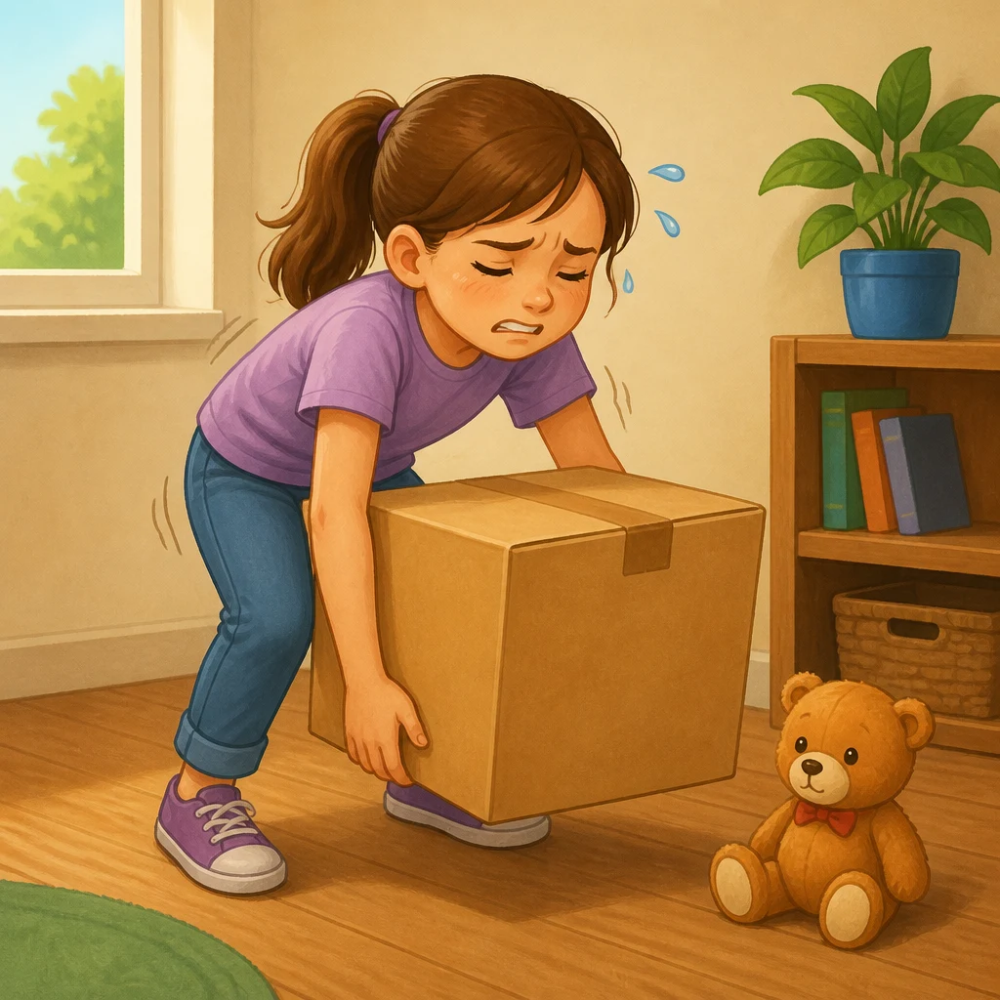
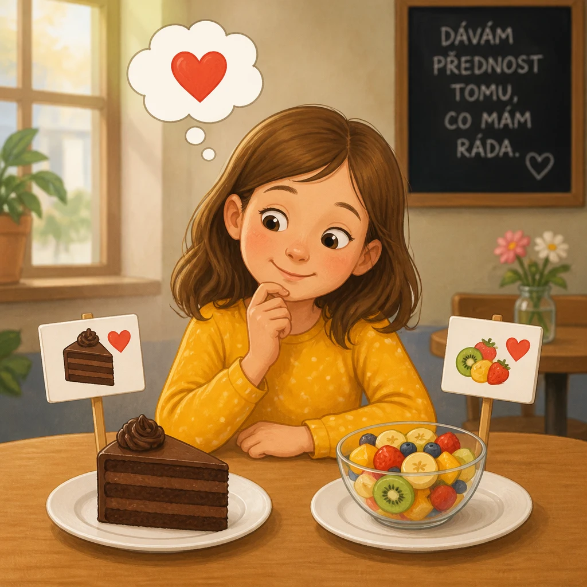
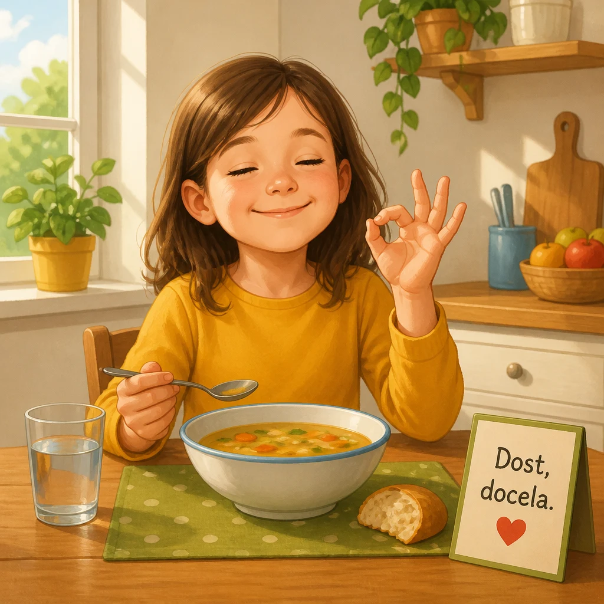

| Preview | File | Size | Words | Czech meanings | Status |
|---|---|---|---|---|---|
 |
swim.webp |
161.4 kB | nuotare | plavat | generated |
amongin.webp |
190.6 kB | fra | mezi, za | generated | |
 |
menrucksacks.webp |
153.2 kB | gli | ti, ty | generated |
 |
pig.webp |
208.2 kB | porco | prase | generated |
 |
postcard.webp |
140.1 kB | cartolina | pohlednice | generated |
 |
unfortunatelly.webp |
133.2 kB | purtroppo | bohužel | generated |
 |
sick.webp |
140.3 kB | malato / ammalato | nemocný / nemocný | generated |
 |
weak.webp |
134.3 kB | debole | slabý | generated |
 |
prefere.webp |
130.8 kB | preferire | preferovat, dávat přednost | generated |
 |
enough.webp |
132.9 kB | abbastanza | dost, docela | generated |